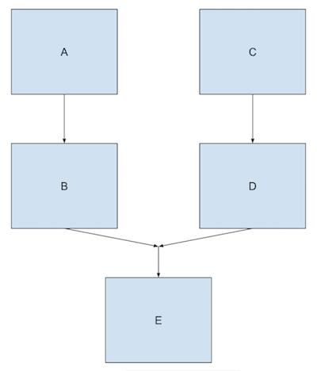

如何使用WorkManager执行后台任务(下)
0x00 WorkManager的高级用法
在上一文中已经了解到WorkManager的基本用法之后，今天来看看它的一些高级用法：
- 链式任务调用
- 唯一任务序列
- 传递参数和获取返回值
0x01 链式任务(Chained tasks)
WorkManager在执行多个工作任务的时候，可以指定执行顺序。假设一个应用程序中有3个OneTimeWorkRequest对象：workA、workB、workC。这几个任务需要按照顺序执行，那么可以使用WorkManager.beginWith()方法加入workA，这时候会返回一个WorkContinuation对象，它定义了工作任务的执行序列。然后通过它再调用WorkContinuation.then()把workB和workC加入到执行队列中，最后执行WorkManager.enqueue()方法。
WorkManager.getInstance()
.beginWith(workA)
// Note: WorkManager.beginWith() returns a
// WorkContinuation object; the following calls are
// to WorkContinuation methods
.then(workB) // FYI, then() returns a new WorkContinuation instance
.then(workC)
.enqueue()
WorkManager会按照指定的顺序来执行workA、workB、workC。如果其中有一个工作任务执行的时候返回Worker.Result.FAILURE，那么整个执行序列就会停止。
WorkManager.beginWith()方法可以传递多个Worker对象，表示可以并行执行的任务组，然后再调用then()方法。当这并行任务组都执行完之后才会执行接下来then中的工作任务。
WorkManager.getInstance()
// 首先，并行执行workA1,workA2,workA3这三个任务
.beginWith(workA1, workA2, workA3)
// 当三个任务都完成之后, 开始执行workB:
.then(workB)
// 最后再并行执行 workC1,workC2
.then(workC1, workC2)
.enqueue()
还可以通过WorkContinuation.combine()方法创建更加复杂的链接任务调用序列。它可以将两个WorkContinuation对象合并，假设要调用如下的任务序列：

val chain1 = WorkManager.getInstance()
.beginWith(workA)
.then(workB)
val chain2 = WorkManager.getInstance()
.beginWith(workC)
.then(workD)
val chain3 = WorkContinuation
.combine(chain1, chain2)
.then(workE)
chain3.enqueue()
这个链式执行顺序是：子链 A->B 与子链 C->D 并行执行的，workA执行后再执行workB，以及workC执行后执行workD ；然后等待 workB以及workD都执行完，最后执行workE。
需要注意的是，WorkManager无法保证两个子链的执行顺序，有可能chain1比chain2快，也有可能是chain1比chain2慢。
0x02 唯一任务序列(Unique work sequences)
在应用程序开发中，可能会多次把同一个链式任务添加到WorkManager中，但希望只有一个链式任务在执行，这时候可以使用唯一任务序列对链式任务指定处理规则。假设，做一个下载文件操作，对一个文件下载链接，我们不需要重复下载，只需要添加一次，后面再添加这个任务，就忽略掉，因为我们不希望重复多次下载同一个文件。所以当添加两个同样名称为”download”操作任务时，对于唯一任务序列来说，可以通过ExistingWorkPolicy中的REPLACE， KEEP 和 APPEND，来指定添加的策略。
- REPLACE：新任务将替换旧的
- KEEP：新任务会被丢弃，旧的任务会被保持
- APPEND：追加，旧任务执行之后再执行新的任务。
使用beginUniqueWork()方法可以创建任务序列，并且可以指定唯一的一个名称(name)。然后再ExistingWorkPolicy指定任务的替换策略
WorkContinuation continuation = mWorkManager
.beginUniqueWork("download",
ExistingWorkPolicy.KEEP,
OneTimeWorkRequest.from(CleanupWorker))
0x03 传递参数和获取返回值
任务执行可以传递参数以及获取到任务执行的结果。使用WorkRequst.Builder.setInputData()方法传递一个Data对象，它是key-value形式的对象，使用Data.Builder来创建。在Worker类中可以使用Worker.getInputData()获取到参数。
同样地，在Worker中可以使用Worker.setOutputData()设置一个Data对象的返回值。要获取到这个返回值就通过LiveData<WorkStatus>。
举个栗子：
有一个下载任务，在Worker中获取传递过来的参数url，然后执行下载，最后设置下载结果。
// the result key:
const val KEY_RESULT = "result"
class DownloadWorker(context : Context, params : WorkerParameters) : Worker(context, params) {
override fun doWork(): Result {
// 获取参数
val url = getInputData("url")
// 执行下载
val result = download(url);
// 设置下载结果
val output: Data = mapOf(KEY_RESULT to result).toWorkData()
setOutputData(output)
// 任务执行成功
return Result.SUCCESS
}
}
然后，通过WorkRequest传递参数
// 构造下载链接参数
val urlData: Data = mapOf("url" to "https://developer.android.com/images/topic/libraries/architecture/workmanager-chain.svg")
.toWorkData()
// 构造WorkRequest并传递下载参数
val downloadWork = OneTimeWorkRequest.Builder<DownloadWorker>()
.setInputData(urlData)
.build()
// 交给WorkManager执行任务
WorkManager.getInstance().enqueue(downloadWork)
最后，通过WorkStatus获取返回值
WorkManager.getInstance().getStatusById(downloadWork.id)
.observe(this, Observer { status ->
if (status != null && status.state.isFinished) {
val myResult = status.outputData.getString(KEY_RESULT,
myDefaultValue)
// ... do something with the result ...
}
})
0x04 引用
https://developer.android.com/topic/libraries/architecture/workmanager/advanced
https://developer.android.com/reference/androidx/work/ExistingWorkPolicy
http://clmirror.storage.googleapis.com/codelabs/android-workmanager/index.html?index=..%2F..%2Findex#0